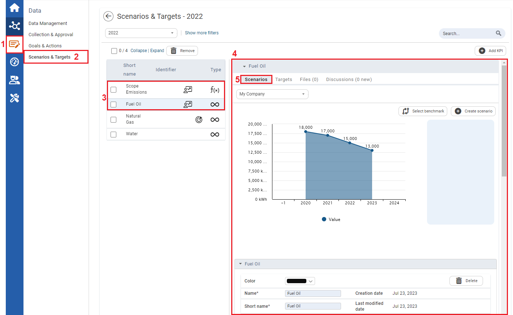
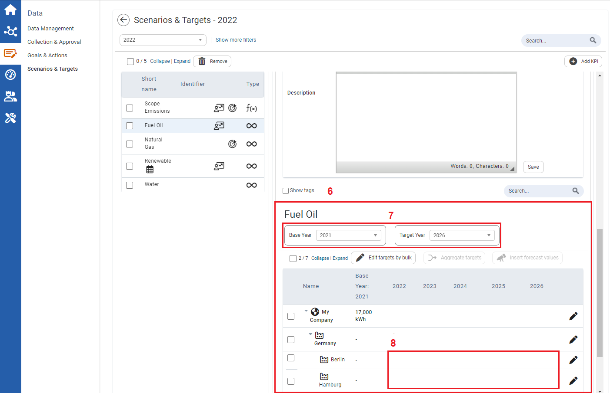
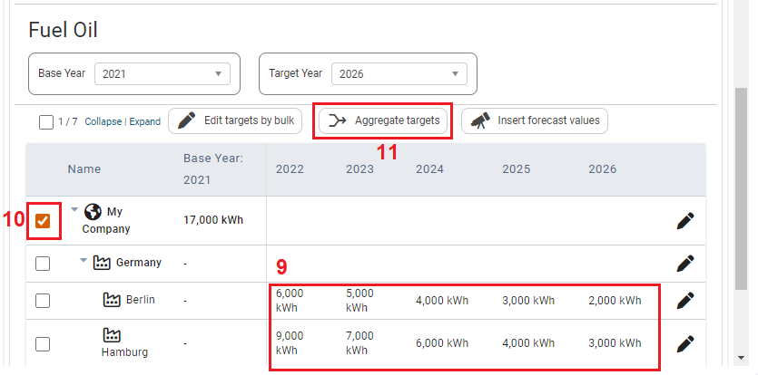
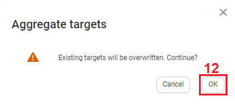
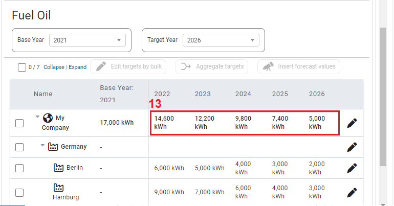

Aggregating Scenario Targets
To Aggregate Scenario Targets

| 1 | On the left navigation panel, click Data. |
| 2 | Click Scenarios & Targets. |
| 3 | Select a numeric or formula KPI. |
| 4 | Information on the KPI is displayed to the right. |
| 5 | Click the Scenarios tab. |

| 6 | Scroll down to the target section of the Scenario. |
| 7 | Select a Base Year for which you have approved values (baseline, etc.) that you are not likely to change, and select a Target Year. Your planning period is from the base year to the target year. |
| 8 | Once you have set the planning period, ensure that there are lower-level organizational units with scenario target values. If values are not present:
|

| 9 | Once lower-level organizational units have target values. |
| 10 | Select the checkbox infront of a higher-level organizational unit. |
| 11 | Click Aggregate targets. The Aggregate targets prompt appears. |

| 12 | On the Aggregate targets prompt, click OK. |

| 13 | The lower-level organizational unit target values will be summed and populated as the higher-level organization unit target values. |